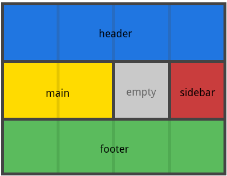

Web Design SIG - CSS GRID Selectors
Oct 2017

Named Grid Template Areas
Today's Topics
Sidebar - https & Chrome v62
CSS Grid - Selectors
Grid Container Properties
Grid Item Properties
Grid Container Properties
display
grid-template-columns
grid-template-rows
grid-template-areas
grid-template
grid-column-gap
grid-row-gap
grid-gap
justify-items
align-items
justify-content
align-content
grid-auto-columns
grid-auto-rows
grid-auto-flow
grid
Grid Item Properties
grid-column-start
grid-column-end
grid-row-start
grid-row-end
grid-column
grid-row
grid-area
justify-self
align-self
Today's Topics
grid-template columns-rows
grid-template
justify-items
align-items
justify-content
align-content
Learning Is Fun
Grid Garden
Thanks!
Matt Ryan
matt@mattryan.co
@MattRy